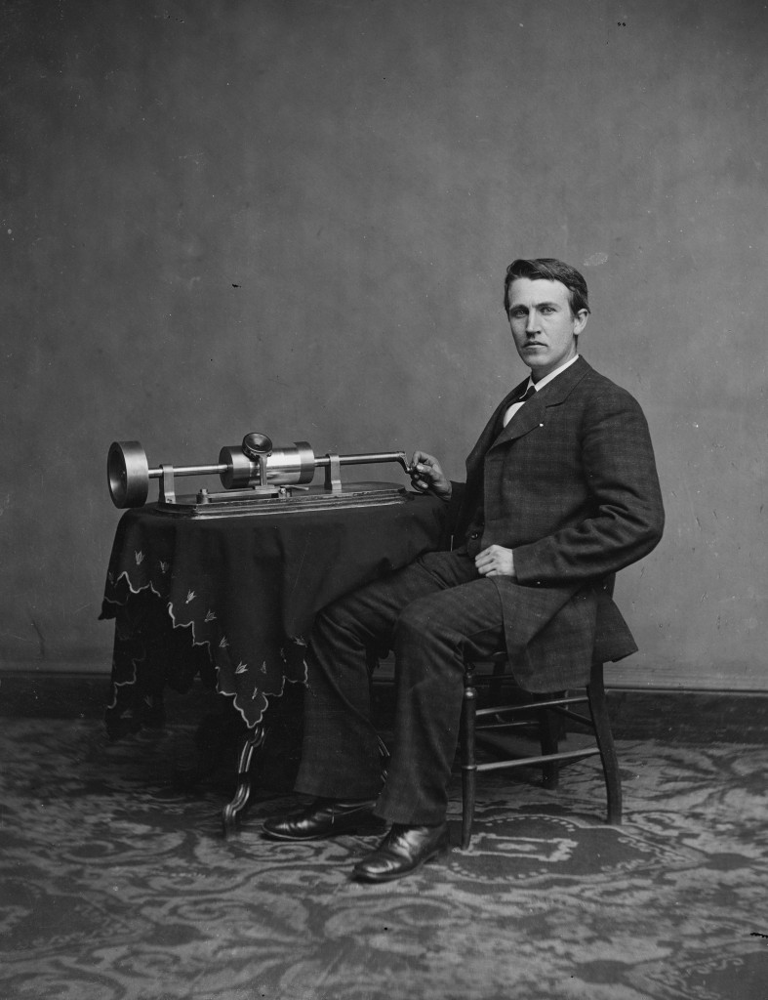
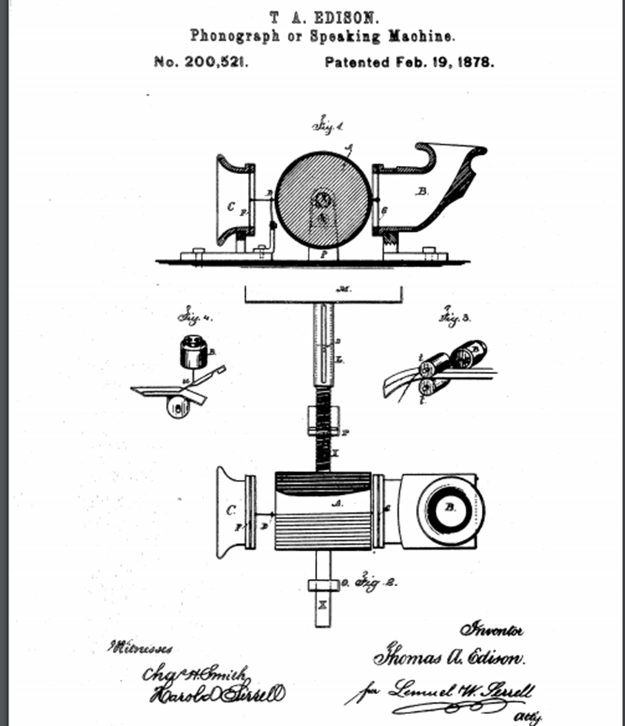
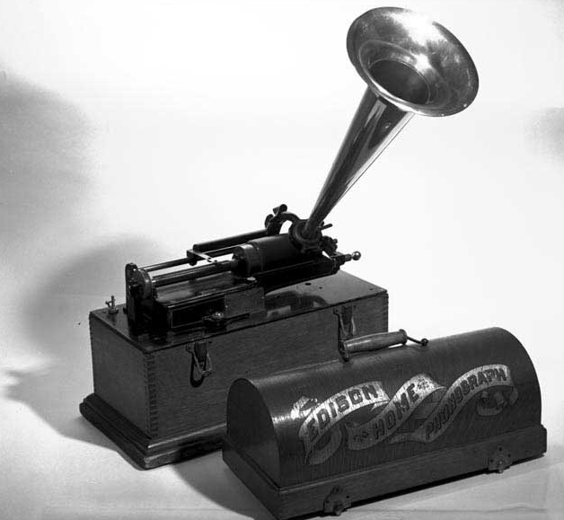
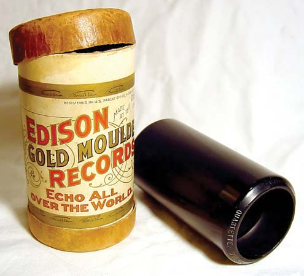

 O fonógrafo foi desenvolvido como resultado do trabalho de Thomas Edison em duas outras invenções, o telégrafo e o telefone. Em 1877, Edison estava trabalhando em uma máquina que transcreveria mensagens telegráficas por meio de indentações em fita de papel, que mais tarde poderiam ser enviadas repetidamente pelo telégrafo. Esse desenvolvimento levou Edison a especular que uma mensagem telefônica também poderia ser gravada de maneira semelhante. Ele experimentou um diafragma que tinha uma ponta de relevo e foi colocado contra papel de parafina que se movia rapidamente. As vibrações da fala causaram indentações no papel. Edison mais tarde mudou o papel para um cilindro de metal com uma folha de estanho enrolada nele. A máquina tinha duas unidades de diafragma e agulha, uma para gravação e outra para reprodução. Quando alguém falaria em um porta-voz, as vibrações sonoras seriam recortadas no cilindro pela agulha de gravação em um padrão de ranhura vertical (ou colina e vale). Edison deu um esboço da máquina para seu mecânico, John Kruesi, construir, o que Kruesi supostamente fez em 30 horas. Edison imediatamente testou a máquina falando a cantiga infantil no bocal: "Mary had a little lamb". Para sua surpresa, a máquina reproduziu suas palavras para ele.
 Embora mais tarde tenha sido afirmado que a data desse evento foi 12 de agosto de 1877, alguns historiadores acreditam que provavelmente aconteceu vários meses depois, uma vez que Edison não registrou a patente até 24 de dezembro de 1877. Além disso, o diário de um dos Os assessores de Edison, Charles Batchelor, parecem confirmar que o fonógrafo não foi construído até 4 de dezembro e terminado dois dias depois. A patente do fonógrafo foi emitida em 19 de fevereiro de 1878. A invenção era altamente original. A única outra evidência registrada de tal invenção foi em um artigo do cientista francês Charles Cros, escrito em 18 de abril de 1877. Havia algumas diferenças, no entanto, entre as ideias dos dois homens, e o trabalho de Cros permaneceu apenas uma teoria, já que ele o fez não produzir um modelo funcional dele.
A Edison Speaking Phonograph Company foi fundada em 24 de janeiro de 1878 para explorar a nova máquina e exibi-la. Edison recebeu $ 10.000 pelos direitos de fabricação e vendas e 20% dos lucros. Como novidade, a máquina foi um sucesso instantâneo, mas era difícil de operar exceto por especialistas, e a folha de estanho durava apenas alguémas jogadas. Eventualmente, a novidade da invenção passou para o público, e Edison não trabalhou mais no fonógrafo por um tempo, concentrando-se em inventar a lâmpada incandescente.
 No vazio deixado por Edison, outros avançaram para melhorar o fonógrafo. Em 1880, Alexander Graham Bell ganhou o Prêmio Volta de US $ 10.000 do governo francês por sua invenção do telefone. Bell usou seus ganhos para estabelecer um laboratório para promover pesquisas elétricas e acústicas, trabalhando com seu primo Chichester A. Bell, um engenheiro químico, e Charles Sumner Tainter, um cientista e fabricante de instrumentos. Eles fizeram algumas melhorias na invenção de Edison, principalmente usando cera no lugar da folha de estanho e um estilete flutuante em vez de uma agulha rígida que cortaria, em vez de entalhar, o cilindro. Uma patente foi concedida a C. Bell and Tainter em 4 de maio de 1886. A máquina foi exibida ao público como grafofone. Bell e Tainter fizeram com que representantes abordassem Edison para discutir uma possível colaboração na máquina, mas Edison recusou e decidiu melhorar ele mesmo o fonógrafo. A essa altura, ele havia conseguido fazer a lâmpada incandescente e agora podia retomar seu trabalho no fonógrafo. Seu trabalho inicial, entretanto, acompanhou de perto as melhorias feitas por Bell e Tainter, especialmente no uso de cilindros de cera, e foi chamado de New Phonograph.
 Os primeiros cilindros de cera que Edison usou eram brancos e feitos de ceresina, cera de abelha e cera esteárica. Entretanto apresentava problemas, pois não existia nenhum método em massa de duplicagem de cilindros. Na maioria das vezes, os artistas tiveram que repetir suas performances durante a gravação, a fim de acumular uma quantidade de cilindros. Isso não era apenas demorado, mas caro. Sendo assim, um processo para a produção em massa de cilindros de cera duplicados foi colocado em vigor em 1901. Nele os cilindros eram moldados, em vez de gravados por um estilete, e uma cera mais dura foi usada. O processo foi denominado Gold Molded, por causa de um vapor de ouro liberado por eletrodos de ouro usados no processo. Os submestres foram criados a partir do mestre de ouro e os cilindros foram feitos a partir desses moldes. De um único molde, 120 a 150 cilindros poderiam ser produzidos todos os dias. A nova cera usada era preta e os cilindros foram inicialmente chamados de New High Speed Hard Wax Molded Records até que o nome foi alterado para Gold Molded. Em meados de 1904, a economia na duplicação em massa se refletiu no preço dos cilindros, que havia sido reduzido para 35 centavos cada.